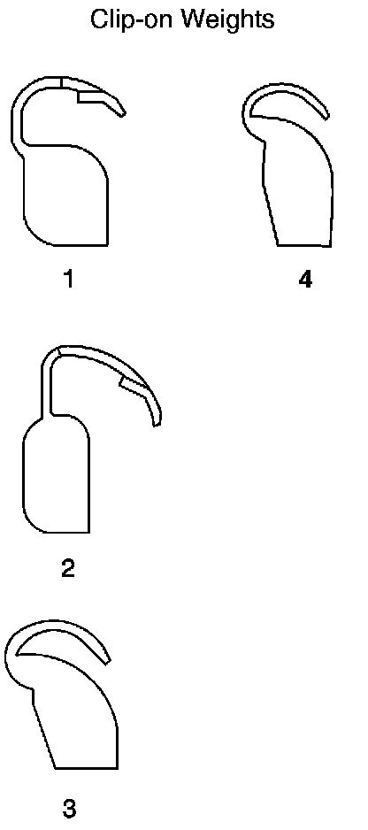
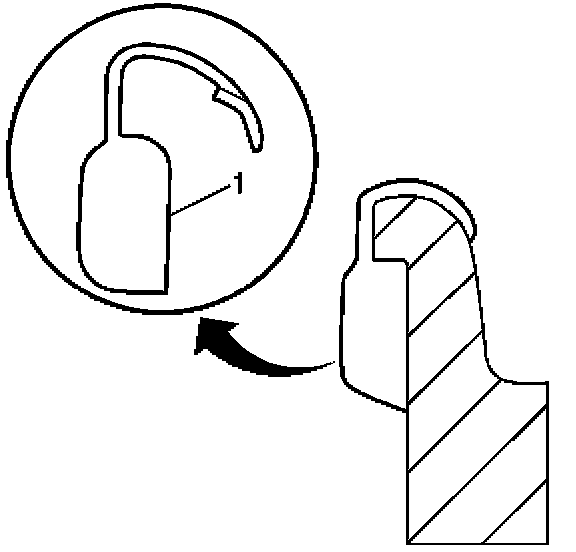
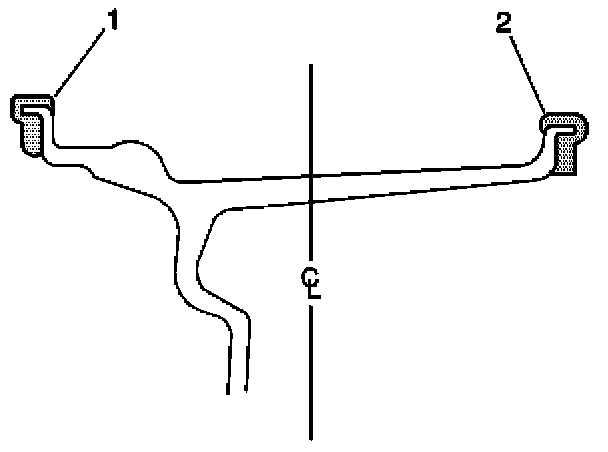
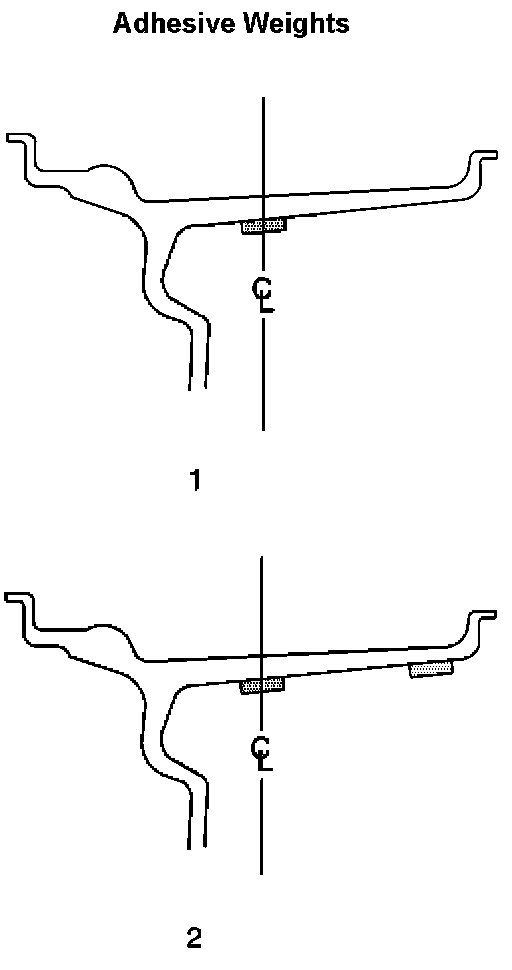

Tires/Wheels - Wheel Weight Usage Precautions
Bulletin No.: 06-03-10-004Date: March 01, 2006
INFORMATION
Subject:
Proper Use of OEM Service Wheel Weights, Marring and/or Damage Due to Use of Non-OEM and/or Incorrect Wheel Weight Installation
Models:
2007 and Prior GM Cars and Light Duty Trucks
2003-2007 HUMMER H2
2006-2007 HUMMER H3
2005-2007 Saab 9-7X
Note:
It is critical to use the proper OEM wheel weights when service requires balancing of the tire/wheel assemblies. Failure to use the proper OEM wheel weights may result in damage/marring to the wheel assembly that will NOT be covered under the vehicles warranty.
Service OEM wheels weights are currently available from GMSPO.

Important:
When balancing factory aluminum wheels with clip-on wheel balance weights, be sure to use special polyester-coated weights. These coated weights reduce the potential for corrosion and damage to aluminum wheels.
These coated weights reduce the potential for corrosion and damage to aluminum wheels.
^ MC (1) and AW (2) series weights are approved for use on aluminum wheels.
^ P (3) series weights are approved for use on steel wheels only.
^ T (4) series coated weights are approved for use on both steel and aluminum wheels.
Important:
Use a nylon or plastic-tipped hammer when installing coated clip-on wheel balance weights to minimize the possibility of damage to the polyester coating.

The contour and style of the wheel rim flange will determine which type of clip-on wheel weight (1) should be used. The weight should follow the contour of the rim flange. The weight clip should firmly grip the rim flange.
Wheel Weight Placement - Clip-on Weights

When static balancing, locate the wheel balance weights on the inboard flange (2) if only 28 g (1 oz) or less is called for. If more than 28 g (1 oz) is called for, split the weights as equally as possible between the inboard (2) and outboard (1) flanges.
When dynamic balancing, locate the wheel balance weights on the inboard (2) and outboard (1) rim flanges at the positions specified by the wheel balancer.

Important:
When installing adhesive balance weights on flangeless wheels, do NOT install the weight on the outboard surface of the rim. Adhesive wheel balance weights may be used on factory aluminum wheels.

Disclaimer